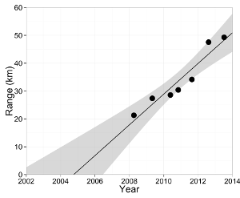

The Greater White-Toothed Shrew in Ireland

People:
Allan McDevitt,
Ian Montgomery,
Neil Reid,
Jeremy Searle,
David Tosh,
Tom White,
Jon Yearsley
The greater white-toothed shrew (Crocidura russula, pictured on the left) is a recent arrival in Ireland. Its presence in Ireland was first discovered in 2007 from the pellets of birds of prey (Tosh et. al 2008).
Our reserach is studying the dispersal of the greater white-toothed shrew in Ireland, it's impact upon the pygmy shrew (Sorex minutus) and the genetics of the greater white-toothed shrew at the edge of its expanding range.

We have brought together all available data on the distribution of the greater white-toothed shrew since 2007, and shown that the species is expanding its range by an average of 5.5 km/yr (McDevitt et al. 2014, pictured on the right). We have also confirmed that the greater white-toothed shrew is having a detrimental effect upon pygmy shrew populations. The reasons for this and the effect upon the broader Irish ecosystem are still unclear.
We are continuing to look at the evolution of the greater white-toothed shrew as it expands its range using the latest genome sequencing approaches.
Funding

This work was funded by the Irish Research Council, the Vincent Wildlife Trust, the Heritage Council and the Genetics Society
References
-
Browett, S. S., Synnott, R., O’Meara, D. B., Antwis, R. E., Browett, S. S., Bown, K. J., Wangensteen, O. S., Dawson, D. A., Searle, J. B., Yearsley, J. M., & McDevitt, A. D. (2022). Resource competition drives an invasion-replacement event among shrew species on an island. Journal of Animal Ecology, 00, 1-12.
-
Gargan, LM, Cornette, RI, Yearsley, JM, Montgomery, WI, Pauper, J, Alves, PC, Butler, F, Pascal, M, Tresset, A, Herrel, A, Lusby, J, Tosh, DG, Searle, JB, McDevitt, AD (2016) 'Molecular and morphological insights into the origin of the invasive greater white-toothed shrew (Crocidura russula) in Ireland'. Biological Invasions, 18 (3):857-871
-
McDevitt, A. et al. (2014). Invading and Expanding: Range Dynamics and Ecological Consequences of the Greater White-Toothed Shrew (Crocidura russula) Invasion in Ireland, PLoS ONE. DOI: 10.1371/journal.pone.0100403
-
Tosh DG, et al. (2008). First record of greater white-toothed shrew Crocidura russula in Ireland. Mammal Review, Vol. 38, p321-326. DOI: 10.1111/j.1365-2907.2008.00130.x
In the media:
https://www.sciencedaily.com/releases/2014/06/140623225011.htm
External Links